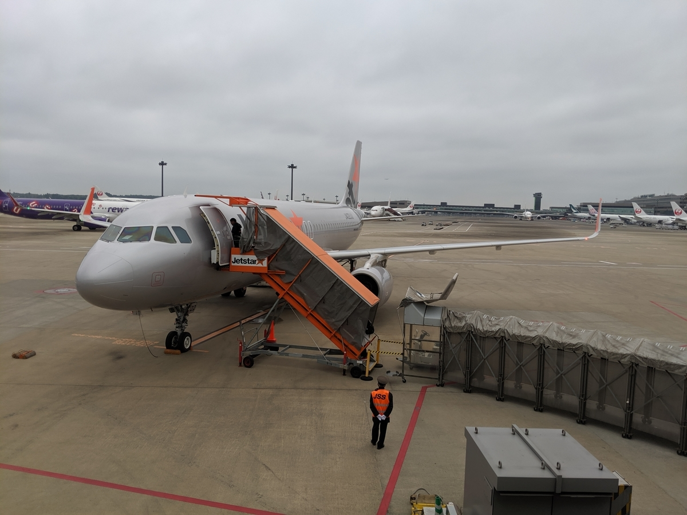
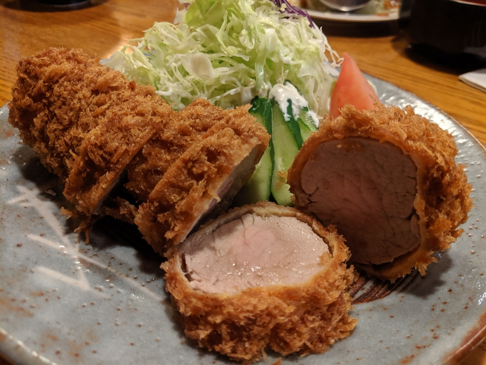
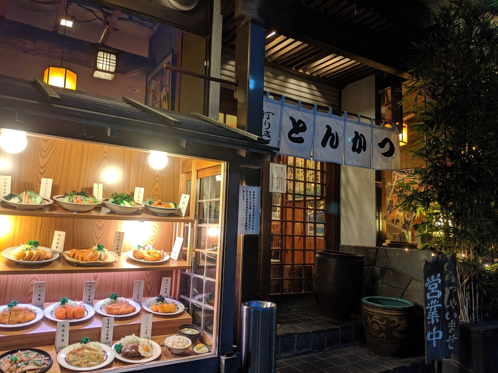
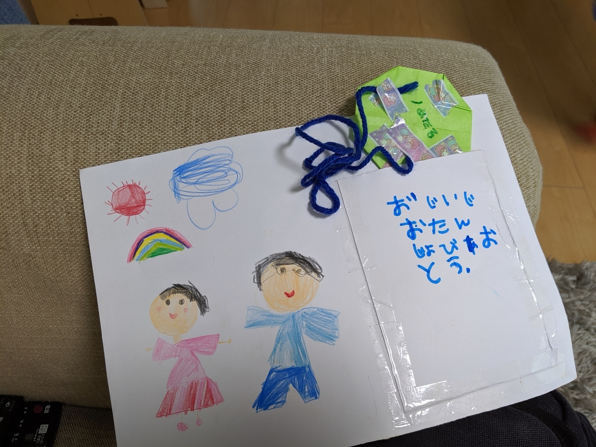

5月7日～9日：ちょっくら東京へ
執筆日時：

週末は少し用事があり、飛行機で東京に行ってきました。
新居から松山空港へ行くのは初めてだったのですが、JR 松山駅まで徒歩圏内というのは便利……これまではタクシーで空港に向かう（2,000円～2,500円）か、電停まで歩いて伊予鉄に乗り継ぎ、リムジンバスで空港へ向かっていた（160円＋460円）のですが、お金・時間・労力のすべてを少し節約できる……しんどい時はフジグランにたまってるタクシー乗っちゃえばいいし、思った以上に楽をできました。まぁ、リムジンバスの時刻表を把握していなかったので、松山駅で30分弱ぼーっと待つ羽目になったのは秘密ですが……今度からはもっと時間を短縮できそう。
東京では無職の仕事の打ち合わせのついでに、家族・親戚と会ってきました（だるやなぎ家の母方は生粋の江戸っ子なのだ）。とくに義兄には旧居の保証人になっていただいていたこともあり、ちゃんとお礼をしました。時間をとってハンコをいただいた以外はたいした迷惑もかけていないのだけど、こういうのは大事にしないとね。
あと、完全に忘れていたのだけど祖母の誕生日だったらしくて、適当な和食屋さんでお祝いをしました。おかんと叔母さんが昼間っから泥酔の一歩手前までのんでて、割と大変でした。行きは市川 → 新小岩まで電車で行ったのだけど、おかんを担いで帰るのはさすがに面倒だったので、タクシーで帰った。タクシーの運転手がかなり不愛想で、そんなに仕事嫌ならやめりゃいいのにと思ったけど、口には出さなかった。

その夜はおかん＋弟2号夫婦（ちび付き）でとんかつ屋へ。わざわざ行徳まで出てトンカツ？ と思ったのですが、ここが割とおいしかった。うちはヒレの「丸太」というモノを定食で食べたのだけど、大人一人でも完食がギリギリのボリューム。かといって、ヒレだからパサパサ……なんてことはなく、ジューシーで柔らかい。ばあちゃんの誕生日会で昼にしこたま飲んで食った自分にトンカツは厳しいのでは、と心配していたのだけど、量はともかく、脂っぽさや硬さという点では苦も無く、サクッと平らげることができました。

結構おすすめかもね。
最後の日は、成田空港へ向かう途中に妹のところによって、甥っ子・姪っ子の顔を見てきました。姪っ子は新体操の教室に通ってるらしくて、それを見学させてもらったのだけど、小さい子供がちょろちょろと群れるなか、一人だけなんかバレエっぽいシュッとした立ち方をしていて、なかなかのものだと感服。来年小学校なのかな？ まだ小さいのに将来が楽しみだと感じた。

帰りは回転ずしでみんなでご飯食べて、妹の家に寄り、ちょっとおそまきの誕生日プレゼントを授与された。こういうのをもらったの初めてだけど、なんかうれしいものですね。「ぶらぶらしてねえで嫁見つけろ」という妹の圧力を感じないでもないですけど……ちゃんと新居のどこかに飾っておこうかと思います。